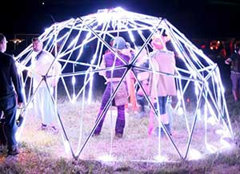
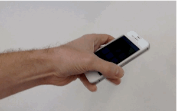
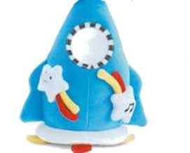
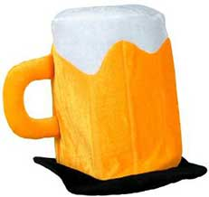
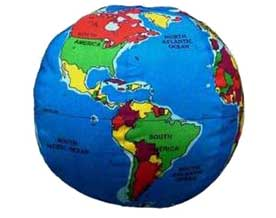

DomeStar is an interactive LED display that you control using a smartphone.

To paint on the dome, select a color and then use your phone like a paintbrush. Before we get started we'll need to calibrate the sensors in your phone.

Point the top of your phone (like it's a TV remote) at the rocket and press the button

Point the top of your phone (like it's a TV remote) at the mug and press the button
Point the top of your phone (like it's a TV remote) at the squirrel and press the button

Point the top of your phone (like it's a TV remote) at the globe and press the button
Select a color and go nuts. For best results, stay standing where you are.